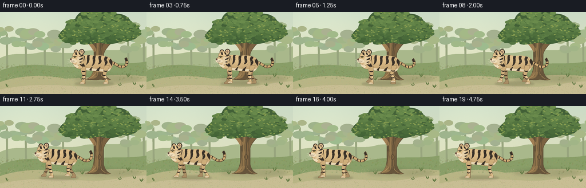
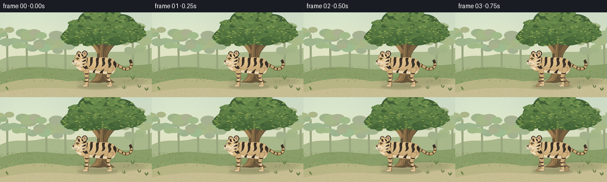

CODING AGENTS AS PIXEL WORLD MODELS
traex/GPT-6.1-Sol · instance_preservation_0055
点击播放 · 原生 RGB 像素
逐轮保存的候选
回放视频、检查图与代码变化。
每份候选均可单独播放。实际图片检查记录在下方工具轨迹中。
候选 01播放与检查图
点击播放 · 原生 RGB 像素

展开代码变化
--- 上一保存版本
+++ 本次保存版本
@@ -0,0 +1,296 @@
+"""Deterministic, text-only procedural illustration and animation.
+Run with Python/Pillow/numpy; no assets or rendering engines are used.
+"""
+from pathlib import Path
+import math
+import json
+import shutil
+import subprocess
+import numpy as np
+from PIL import Image, ImageDraw, ImageFilter
+import artifact_io
+
+ROOT = Path(__file__).resolve().parent
+SPEC = json.loads((ROOT / 'task_spec.json').read_text())
+W, H, S = SPEC['width'], SPEC['height'], 4
+rng = np.random.default_rng(9187)
+
+# Curved paths are tessellated directly, then drawn at 4x resolution.
+def points(commands):
+ out=[]; p=(0,0); start=p
+ for c in commands:
+ if c[0]=='M':
+ p=(c[1],c[2]); start=p; out.append(p)
+ elif c[0]=='L':
+ p=(c[1],c[2]); out.append(p)
+ elif c[0]=='C':
+ p0=p; a=(c[1],c[2]); b=(c[3],c[4]); e=(c[5],c[6])
+ for t in np.linspace(0,1,22)[1:]:
+ u=1-t
+ out.append((u*u*u*p0[0]+3*u*u*t*a[0]+3*u*t*t*b[0]+t*t*t*e[0], u*u*u*p0[1]+3*u*u*t*a[1]+3*u*t*t*b[1]+t*t*t*e[1]))
+ p=e
+ elif c[0]=='Q':
+ p0=p; a=(c[1],c[2]); e=(c[3],c[4])
+ for t in np.linspace(0,1,16)[1:]:
+ u=1-t; out.append((u*u*p0[0]+2*u*t*a[0]+t*t*e[0],u*u*p0[1]+2*u*t*a[1]+t*t*e[1]))
+ p=e
+ elif c[0]=='Z': out.append(start); p=start
+ return out
+
+class Canvas:
+ def __init__(self, image, offset=(0,0)):
+ self.im=image; self.d=ImageDraw.Draw(image); self.ox,self.oy=offset
+ def xy(self,p): return ((p[0]+self.ox)*S,(p[1]+self.oy)*S)
+ def path(self,cmd,fill=None,line=None,width=.5):
+ p=[self.xy(v) for v in points(cmd)]
+ if fill is not None: self.d.polygon(p,fill=fill)
+ if line is not None: self.d.line(p,fill=line,width=max(1,round(width*S)),joint='curve')
+ def poly(self,pts,fill): self.d.polygon([self.xy(p) for p in pts],fill=fill)
+ def line(self,pts,fill,width=.5): self.d.line([self.xy(p) for p in pts],fill=fill,width=max(1,round(width*S)),joint='curve')
+ def ellipse(self,box,fill,line=None,width=.5):
+ self.d.ellipse([*self.xy(box[:2]),*self.xy(box[2:])],fill=fill,outline=line,width=max(1,round(width*S)))
+
+
+def background():
+ yy,xx=np.mgrid[0:H*S,0:W*S]
+ v=yy/(H*S)
+ sky=np.zeros((H*S,W*S,3),dtype=np.float32)
+ for k,(top,bottom) in enumerate(zip((203,219,198),(234,227,187))):
+ sky[:,:,k]=top+(bottom-top)*v
+ # The light source is an open, pale patch of sky to the upper left.
+ glow=np.exp(-((xx/(W*S)-.19)**2/.11+(v-.15)**2/.22))
+ sky+=glow[:,:,None]*np.array([11,10,7])
+ sky+=rng.normal(0,.65,(H*S,W*S,1))
+ im=Image.fromarray(np.uint8(np.clip(sky,0,255)))
+ c=Canvas(im)
+ c.path([('M',0,81),('C',24,69,39,77,64,72),('C',90,66,120,78,149,68),('C',190,65,223,71,256,60),('L',256,144),('L',0,144),('Z',)],(169,184,139))
+ # Misty woodland behind the one dominant tree.
+ for x,y,size in [(12,37,22),(45,45,18),(78,48,21),(110,42,16),(224,48,20),(251,32,25)]:
+ c.path([('M',x-1,99),('L',x-1.8,y+4),('L',x+1.5,y),('L',x+2,100),('Z',)],(152,165,126))
+ for j in range(12):
+ cx=x+rng.uniform(-size,size); cy=y+rng.uniform(-11,18)
+ rr=rng.uniform(6,13)
+ c.ellipse((cx-rr,cy-rr*.6,cx+rr,cy+rr*.6),(164+int(rng.integers(-7,8)),181+int(rng.integers(-6,7)),139+int(rng.integers(-6,7))))
+ # Sunlit grassy hillside and a quiet sandy forest floor.
+ c.path([('M',0,103),('C',46,86,80,95,125,97),('C',167,86,220,94,256,87),('L',256,144),('L',0,144),('Z',)],(137,158,104))
+ c.path([('M',0,123),('C',39,110,81,110,114,117),('C',147,117,193,106,256,113),('L',256,144),('L',0,144),('Z',)],(184,181,133))
+ c.path([('M',0,136),('C',60,124,101,129,151,131),('C',191,134,226,121,256,122),('L',256,144),('L',0,144),('Z',)],(200,190,148))
+ for j in range(2600):
+ x=rng.uniform(0,256); y=rng.uniform(91,144)
+ if y<111:
+ col=(int(rng.integers(121,163)),int(rng.integers(142,171)),int(rng.integers(87,119)))
+ else:
+ col=(int(rng.integers(166,198)),int(rng.integers(165,187)),int(rng.integers(118,145)))
+ r=rng.uniform(.1,.45)
+ c.ellipse((x-r,y-r*.45,x+r,y+r*.45),col)
+ # Background tufts do not obscure the animal.
+ for j in range(185):
+ x=rng.uniform(0,256); y=rng.uniform(96,120)
+ if 108<x<207 and y>107: continue
+ h=rng.uniform(1,4)
+ col=tuple(int(a) for a in (rng.uniform(104,140),rng.uniform(126,153),rng.uniform(70,93)))
+ c.line([(x-1,y),(x-.6,y-h),(x,y-.3),(x+1.4,y-h*.8)],col,.32)
+ # Broad, soft tree shadow. It is behind the tiger's contact shadow.
+ shadow=Image.new('RGBA',im.size)
+ sc=Canvas(shadow)
+ sc.ellipse((129,111,246,123),(58,71,41,42))
+ sc.ellipse((152,108,201,124),(56,65,37,35))
+ shadow=shadow.filter(ImageFilter.GaussianBlur(3*S))
+ im=Image.alpha_composite(im.convert('RGBA'),shadow)
+ c=Canvas(im)
+ bark=(103,85,59); rim=(87,75,51)
+ # Roots, trunk, and branching crown are drawn as one continuous silhouette.
+ c.path([('M',149,119),('C',159,115,163,109,164,96),('L',164,68),('C',158,58,148,49,140,43),('L',143,36),('C',153,42,166,51,169,57),('C',170,39,168,27,161,18),('L',168,15),('C',178,29,180,42,178,58),('C',185,49,198,41,211,34),('L',215,39),('C',197,51,185,62,181,74),('L',181,98),('C',181,108,185,115,194,119),('C',183,122,177,117,173,119),('C',165,121,159,118,149,119),('Z',)],bark,rim,.6)
+ c.path([('M',154,117),('C',167,108,168,86,168,68),('C',169,54,168,31,164,19),('L',168,18),('C',177,42,173,58,173,78),('L',172,104),('C',171,115,167,118,154,117),('Z',)],(144,116,75))
+ c.path([('M',176,65),('C',185,52,194,47,207,39),('C',195,51,186,60,180,74),('L',177,103),('L',174,109),('Z',)],(123,98,65))
+ c.path([('M',165,71),('C',159,60,149,49,143,42),('L',143,39),('C',153,47,165,58,169,66),('Z',)],(160,126,83))
+ # Long, irregular grooves make the trunk clearly read as bark.
+ for x in [165.5,168,172,175,178]:
+ c.path([('M',x+1,112),('C',x-2,99,x+2,87,x,77),('C',x-1,66,x+2,64,x+1,53)],None,(76,65,46),.45)
+ c.path([('M',x-.5,110),('C',x+1.5,95,x,87,x+.8,79)],None,(167,136,90),.32)
+ c.ellipse((171,85,177,94),(83,69,49))
+ c.ellipse((172,86,176,93),(130,104,68))
+ c.path([('M',175,88),('C',172,87,172,93,175,91)],None,(79,67,48),.5)
+ c.path([('M',150,119),('Q',163,115,167,107)],None,(181,148,97),.8)
+ c.path([('M',176,109),('Q',181,118,192,119)],None,(165,135,89),.7)
+ # Canopy: a dark mass, then leaf sprays shaped around the open branches.
+ lobes=[(139,28,25,17),(158,16,27,20),(181,16,29,19),(204,23,26,20),(221,34,23,17),(191,39,30,17),(155,40,27,16),(126,41,22,14)]
+ for x,y,rx,ry in lobes:
+ c.ellipse((x-rx,y-ry,x+rx,y+ry),(66,96,55))
+ for j in range(490):
+ x,y,rx,ry=lobes[int(rng.integers(len(lobes)))]
+ angle=rng.uniform(0,math.tau); r=math.sqrt(rng.uniform(0,1))
+ xx=x+math.cos(angle)*r*rx; yy=y+math.sin(angle)*r*ry
+ leafr=rng.uniform(2,6)
+ light=max(0,1-(yy+5)/70)+rng.uniform(-.25,.25)
+ col=(int(68+43*light),int(101+43*light),int(55+24*light))
+ c.ellipse((xx-leafr,yy-leafr*.52,xx+leafr,yy+leafr*.52),col)
+ if j%3==0:
+ c.line([(xx-leafr*.5,yy-.1),(xx+leafr*.3,yy-.5)],(col[0]+12,col[1]+10,col[2]+5),.35)
+ # Small outer leaves catch warm daylight.
+ for j in range(125):
+ x,y,rx,ry=lobes[int(rng.integers(len(lobes)))]
+ a=rng.uniform(0,math.tau); rr=rng.uniform(.65,1.04)
+ x+=math.cos(a)*rr*rx; y+=math.sin(a)*rr*ry
+ if y<0: continue
+ c.ellipse((x-1.5,y-.7,x+1.5,y+.7),(135,157,80))
+ # A few low plants frame the stage rather than covering it.
+ for x,y in [(235,128),(247,133),(13,132),(209,130),(224,114),(144,120)]:
+ for k in range(6):
+ h=rng.uniform(3,7); dx=rng.uniform(-4,4)
+ c.path([('M',x,y),('Q',x+dx*.5,y-h*.8,x+dx,y-h),('Q',x+dx*.8,y-h*.3,x,y)],(96,119,66))
+ return im.convert('RGB')
+
+BEIGE=(206,174,123)
+INK=(55,47,39)
+CREAM=(237,220,185)
+
+def tiger(x,y,phase,activity):
+ layer=Image.new('RGBA',(W*S,H*S))
+ c=Canvas(layer,(x,y))
+ # Tail follows the same identifiable tiger, with gently lagging tip motion.
+ wave=math.sin(phase*.5)*2*activity
+ tail=[('M',23,-8),('C',34,-10,40,2,48,0),('C',58,-1,57,-11+wave,53,-15+wave)]
+ c.path(tail,None,(94,74,49),5)
+ c.path(tail,None,(204,169,115),3.8)
+ for j in range(6):
+ # Bands follow a sampled tail centerline.
+ pp=points(tail); idx=int((.20+j*.135)*(len(pp)-1)); p=pp[idx]
+ pre=pp[max(0,idx-1)]; nex=pp[min(len(pp)-1,idx+1)]
+ dx,dy=nex[0]-pre[0],nex[1]-pre[1]; ll=math.hypot(dx,dy)
+ nx,ny=-dy/ll*1.8,dx/ll*1.8
+ c.line([(p[0]-nx,p[1]-ny),(p[0]+nx,p[1]+ny)],INK,1.5)
+ c.path([('M',55,-10+wave),('Q',55,-13+wave,53,-15+wave)],None,INK,3.8)
+
+ def leg(hip,ph,front,far):
+ s=math.sin(ph)*activity; lift=max(0,math.cos(ph))*3.8*activity
+ hx=hip; hy=1 if front else 0
+ px=hip-1+s*8.5; py=28-lift
+ kx=hip+(s*3.8 if front else -5+s*2.6); ky=15-lift*.45
+ fill=(168,140,99) if far else BEIGE
+ outline=(121,99,70) if far else (140,113,78)
+ # A tapering upper leg, articulated hock, and rounded tiger paw.
+ c.path([('M',hx-4.8,hy-2),('C',hx-6,hy+7,kx-2.8,ky-3,kx-2.4,ky),('L',px-2.2,py-2),('C',px-4,py-1,px-6,py,px-5.7,py+1.4),('Q',px-4,py+2.5,px+2.7,py+1.8),('Q',px+4,py+.8,px+3,py-2),('L',kx+3.2,ky),('C',kx+4.1,ky-6,hx+4,hy+3,hx+4.4,hy-2),('Z',)],fill,outline,.4)
+ if not far:
+ c.path([('M',kx+.2,ky+1),('L',px+1,py-2),('L',px+2.4,py-1.5),('L',kx+2.7,ky)],(232,202,153))
+ c.ellipse((px-5.4,py-.5,px+2.4,py+1.9),(226,207,170))
+ for t in [.27,.53,.75]:
+ if t<.52:
+ cx=hx+(kx-hx)*t/.52; cy=hy+(ky-hy)*t/.52
+ else:
+ q=(t-.52)/.48; cx=kx+(px-kx)*q;cy=ky+(py-ky)*q
+ wid=3 if t<.4 else 2.4
+ c.path([('M',cx-wid,cy-1.3),('Q',cx,cy+.4,cx+wid,cy-1),('L',cx+wid,cy+.5),('Q',cx,cy+1.9,cx-wid,cy+.2),('Z',)],(74,59,43) if far else INK)
+ if not far:
+ for off in [-3,-.8]:
+ c.line([(px+off,py+.3),(px+off+.3,py+1.45)],(127,111,88),.3)
+ # Far side legs are occluded naturally by the body and near limbs.
+ leg(-19,phase+math.pi,True,True)
+ leg(21,phase+.30,False,True)
+ body=[('M',-29,-13),('C',-25,-22,-13,-21,0,-19),('C',14,-21,27,-18,30,-10),('C',34,-2,27,7,20,9),('C',9,10,-4,7,-13,6),('C',-24,7,-31,-2,-29,-13),('Z',)]
+ c.path(body,BEIGE,(130,105,73),.5)
+ # Masked soft volume makes the torso rounded, rather than a flat cutout.
+ mask=Image.new('L',layer.size); mc=Canvas(mask,(x,y));mc.path(body,255)
+ yy,xx=np.mgrid[0:H*S,0:W*S]
+ lx=xx/S-x; ly=yy/S-y
+ light=np.exp(-((lx+7)/34)**2-((ly+15)/12)**2)
+ dark=np.clip((ly+8)/20,0,1)
+ arr=np.zeros((H*S,W*S,4),dtype=np.uint8)
+ for k,v in enumerate(BEIGE):arr[:,:,k]=np.clip(v+light*(19 if k<2 else 17)-dark*(14 if k<2 else 11),0,255)
+ arr[:,:,3]=np.asarray(mask)
+ layer=Image.alpha_composite(layer,Image.fromarray(arr)); c=Canvas(layer,(x,y))
+ c.path([('M',-25,0),('C',-15,3,1,4,20,5),('Q',27,4,28,1),('C',27,9,20,10,12,8),('C',0,7,-14,8,-21,4),('Z',)],(231,213,177))
+ # Shoulder contour and haunch volume, understated beneath the stripes.
+ c.path([('M',-15,-16),('C',-19,-9,-16,-3,-19,5)],None,(182,148,101),.75)
+ c.path([('M',20,-15),('C',27,-12,26,-5,22,2)],None,(184,148,97),.7)
+ stripes=[
+ [('M',-21,-18),('C',-23,-13,-22,-7,-25,-3),('Q',-19,-5,-19,-11),('L',-18,-19),('Z',)],
+ [('M',-13,-20),('C',-15,-15,-12,-9,-16,-3),('C',-10,-6,-9,-12,-10,-18),('L',-9,-20),('Z',)],
+ [('M',-3,-19),('C',-6,-14,-1,-8,-6,-1),('C',0,-3,1,-10,0,-14),('L',1,-19),('Z',)],
+ [('M',7,-19),('C',4,-14,10,-10,5,-4),('C',11,-5,13,-9,10,-14),('L',11,-19),('Z',)],
+ [('M',18,-18),('C',13,-12,20,-8,16,-1),('C',21,-3,24,-8,20,-12),('L',22,-17),('Z',)],
+ [('M',27,-14),('Q',23,-10,27,-5),('L',29,-1),('Q',31,-6,30,-10),('Z',)],
+ [('M',-10,6),('Q',-8,2,-4,0),('Q',-7,6,-6,7),('Z',)],
+ [('M',2,7),('Q',5,2,10,0),('Q',7,5,7,8),('Z',)],
+ [('M',16,8),('Q',19,3,24,1),('Q',22,7,21,9),('Z',)]
+ ]
+ for st in stripes:c.path(st,INK)
+ # Sparse painted fur marks, anchored to the animal's coordinate system.
+ fur_rng=np.random.default_rng(62)
+ for j in range(75):
+ fx=fur_rng.uniform(-21,25); fy=fur_rng.uniform(-16,5)
+ if ((fx-2)/29)**2+((fy+7)/14)**2<.78:
+ c.line([(fx,fy),(fx+1,fy-.15)],(220,191,143,100),.19)
+ leg(21,phase+math.pi+.30,False,False)
+ leg(-20,phase,True,False)
+ # Powerful neck and broad cheek distinguish a tiger from a small housecat.
+ c.path([('M',-23,-21),('C',-28,-26,-34,-26,-37,-20),('C',-42,-13,-39,-4,-34,1),('C',-29,5,-23,5,-20,-1),('C',-18,-8,-20,-17,-23,-21),('Z',)],(216,185,134),(133,107,73),.5)
+ c.path([('M',-34,-18),('C',-41,-13,-40,-5,-35,0),('L',-31,2),('L',-28,0),('Q',-36,-7,-33,-14),('Z',)],CREAM)
+ # Rounded ears, pale inner fur, dark backs.
+ c.ellipse((-37,-30,-29,-21),INK)
+ c.ellipse((-35.6,-28.8,-30,-23),(211,178,131))
+ c.ellipse((-28,-31,-18.5,-21),INK)
+ c.ellipse((-26.5,-29.7,-20,-22),(224,192,145))
+ c.ellipse((-24.9,-28.3,-21.6,-24),(155,125,104))
+ # Head outline: brow, short nose, wide muzzle and fluffy cheek.
+ c.path([('M',-36,-25),('C',-32,-29,-23,-27,-21,-22),('C',-18,-17,-20,-10,-24,-7),('L',-25,-3),('L',-27,-4),('L',-29,-2.5),('C',-35,-3,-39,-5,-41,-8),('L',-43,-12),('Q',-42,-15,-39,-17),('C',-40,-21,-38,-23,-36,-25),('Z',)],(222,190,139),(119,99,71),.45)
+ c.path([('M',-33,-25),('Q',-29,-27,-25,-23),('Q',-22,-20,-23,-16),('Q',-28,-20,-33,-20),('Z',)],(232,202,151))
+ c.path([('M',-30,-17),('C',-26,-18,-23,-14,-24,-9),('Q',-26,-4,-30,-4),('Q',-33,-7,-32,-12),('Z',)],(230,208,168))
+ # Face stripes fan backward across the cheeks; brow marks are short.
+ for st in [
+ [('M',-35,-25),('L',-34,-21),('L',-31,-20),('L',-32,-25),('Z',)],
+ [('M',-29,-26),('L',-28,-22),('L',-25,-20),('L',-26,-24),('Z',)],
+ [('M',-22,-22),('Q',-27,-18,-28,-18),('L',-23,-18),('L',-20,-20),('Z',)],
+ [('M',-21,-16),('Q',-25,-15,-28,-12),('Q',-25,-12,-22,-13),('Z',)],
+ [('M',-23,-10),('L',-28,-8),('L',-25,-7),('Z',)],
+ [('M',-26,-3),('Q',-23,0,-21,0),('L',-22,-3),('L',-26,-5),('Z',)],
+ [('M',-21,-6),('Q',-18,-4,-18,0),('Q',-23,-1,-24,-2),('Z',)]
+ ]:c.path(st,INK)
+ # Alert eye under a dark brow, looking in the direction of travel.
+ c.path([('M',-38,-17.6),('Q',-35,-20,-32.4,-17.1)],None,INK,.9)
+ c.ellipse((-37,-18.1,-33.7,-15.4),(51,48,35))
+ c.ellipse((-36.5,-17.6,-34.2,-15.7),(170,152,71))
+ c.ellipse((-36,-17.5,-35.2,-15.8),(34,33,27))
+ c.ellipse((-36.2,-17.5,-35.6,-16.9),(253,240,200))
+ # Ivory whisker pads, pink-brown nose, lower jaw.
+ c.ellipse((-44,-13.9,-35,-7.1),(240,222,187))
+ c.ellipse((-39,-12.9,-31.8,-6.5),(240,221,186))
+ c.path([('M',-43.7,-13.9),('Q',-42.4,-15,-40.7,-13.6),('L',-41.4,-11.4),('L',-43.5,-11.5),('Z',)],(100,72,61))
+ c.line([(-43,-13.5),(-41.8,-13.5)],(168,116,101),.5)
+ c.path([('M',-42,-11.5),('L',-41.5,-9.5),('Q',-38.5,-8,-36,-9.1)],None,(78,65,53),.45)
+ c.path([('M',-40,-7.8),('Q',-37,-5.8,-32,-7)],None,(141,121,89),.4)
+ for dx,dy in [(-39.2,-11.1),(-37.3,-10.5),(-39.2,-9.4),(-35.1,-10.2)]:
+ c.ellipse((dx-.27,dy-.22,dx+.27,dy+.22),(98,88,68))
+ for yy,tip in [(-10.4,-13),(-9.3,-9.4),(-8.3,-5.8)]:
+ c.path([('M',-38,yy),('Q',-43,yy-.8,-48,tip)],None,(234,225,203),.34)
+ c.path([('M',-33,-5),('L',-32,-2.4),('L',-30,-4)],None,(242,222,185),.65)
+ return layer
+
+
+def main():
+ bg=background()
+ frames=[]
+ for i in range(SPEC['frames']):
+ u=float(np.clip((i-2)/15,0,1))
+ ease=u*u*(3-2*u)
+ x=166-95*ease
+ activity=(math.sin(math.pi*u)**.45) if 0<u<1 else 0
+ phase=.94*(i-2)
+ y=96+.5*math.cos(phase*2)*activity
+ frame=bg.convert('RGBA')
+ contact=Image.new('RGBA',frame.size); cc=Canvas(contact)
+ cc.ellipse((x-36,122,x+33,130),(63,60,37,50))
+ cc.ellipse((x-27,124,x+28,128),(51,52,31,50))
+ frame=Image.alpha_composite(frame,contact.filter(ImageFilter.GaussianBlur(1.4*S)))
+ frame=Image.alpha_composite(frame,tiger(x,y,phase,activity))
+ frame=frame.convert('RGB').resize((W,H),Image.Resampling.LANCZOS)
+ frames.append(np.asarray(frame,dtype=np.uint8))
+ frames=np.stack(frames)
+ artifact_io.save(frames,ROOT)
+ # Standard playable video is provided as well as the lossless RGB frames.
+ ffmpeg=shutil.which('ffmpeg')
+ if ffmpeg:
+ subprocess.run([ffmpeg,'-y','-loglevel','error','-framerate',str(SPEC['fps']),'-i',str(ROOT/'frames'/'%02d.png'),'-c:v','libx264','-crf','17','-pix_fmt','yuv420p','-movflags','+faststart',str(ROOT/'video.mp4')],check=True)
+ print(f'Saved {len(frames)} RGB frames, {W}x{H}, at {SPEC["fps"]} fps.')
+
+if __name__=='__main__': main()
候选 02播放与检查图
点击播放 · 原生 RGB 像素


展开代码变化
--- 上一保存版本
+++ 本次保存版本
@@ -291,6 +291,14 @@
ffmpeg=shutil.which('ffmpeg')
if ffmpeg:
subprocess.run([ffmpeg,'-y','-loglevel','error','-framerate',str(SPEC['fps']),'-i',str(ROOT/'frames'/'%02d.png'),'-c:v','libx264','-crf','17','-pix_fmt','yuv420p','-movflags','+faststart',str(ROOT/'video.mp4')],check=True)
+ else:
+ import cv2
+ writer=cv2.VideoWriter(str(ROOT/'video.mp4'),cv2.VideoWriter_fourcc(*'mp4v'),float(SPEC['fps']),(W,H))
+ if not writer.isOpened():
+ raise RuntimeError('Could not open the local video encoder.')
+ for frame in frames:
+ writer.write(cv2.cvtColor(frame,cv2.COLOR_RGB2BGR))
+ writer.release()
print(f'Saved {len(frames)} RGB frames, {W}x{H}, at {SPEC["fps"]} fps.')
if __name__=='__main__': main()
可观测工具轨迹
实际执行的命令与返回图片。
命令 1exit 0
/bin/bash -lc "ls -la && cat prompt.txt && printf '\\n---RULES---\\n' && cat GENERATION_RULES.md && printf '\\n---SPEC---\\n' && cat task_spec.json"
命令 2exit 0
/bin/bash -lc "cat artifact_io.py && python - <<'PY'
import PIL,numpy
print('Pillow',PIL.__version__)
PY"命令 3exit 0
/bin/bash -lc "python - <<'PY' import importlib.util for x in ['aggdraw','scipy','cv2']: print(x, bool(importlib.util.find_spec(x))) PY"
命令 4exit 2
/bin/bash -lc "cat > generate.py <<'PY'
\"\"\"Deterministic, text-only procedural illustration and animation.
Run with Python/Pillow/numpy; no assets or rendering engines are used.
\"\"\"
from pathlib import Path
import math
import json
import shutil
import subprocess
import numpy as np
from PIL import Image, ImageDraw, ImageFilter
import artifact_io
ROOT = Path(__file__).resolve().parent
SPEC = json.loads((ROOT / 'task_spec.json').read_text())
W, H, S = SPEC['width'], SPEC['height'], 4
rng = np.random.default_rng(9187)
# Curved paths are tessellated directly, then drawn at 4x resolution.
def points(commands):
out=[]; p=(0,0); start=p
for c in commands:
if c[0]=='M':
p=(c[1],c[2]); start=p; out.append(p)
elif c[0]=='L':
p=(c[1],c[2]); out.append(p)
elif c[0]=='C':
p0=p; a=(c[1],c[2]); b=(c[3],c[4]); e=(c[5],c[6])
for t in np.linspace(0,1,22)[1:]:
u=1-t
out.append((u*u*u*p0[0]+3*u*u*t*a[0]+3*u*t*t*b[0]+t*t*t*e[0], u*u*u*p0[1]+3*u*u*t*a[1]+3*u*t*t*b[1]+t*t*t*e[1]))
p=e
elif c[0]=='Q':
p0=p; a=(c[1],c[2]); e=(c[3],c[4])
for t in np.linspace(0,1,16)[1:]:
u=1-t; out.append((u*u*p0[0]+2*u*t*a[0]+t*t*e[0],u*u*p0[1]+2*u*t*a[1]+t*t*e[1]))
p=e
elif c[0]=='Z': out.append(start); p=start
return out
class Canvas:
def __init__(self, image, offset=(0,0)):
self.im=image; self.d=ImageDraw.Draw(image); self.ox,self.oy=offset
def xy(self,p): return ((p[0]+self.ox)*S,(p[1]+self.oy)*S)
def path(self,cmd,fill=None,line=None,width=.5):
p=[self.xy(v) for v in points(cmd)]
if fill is not None: self.d.polygon(p,fill=fill)
if line is not None: self.d.line(p,fill=line,width=max(1,round(width*S)),joint='curve')
def poly(self,pts,fill): self.d.polygon([self.xy(p) for p in pts],fill=fill)
def line(self,pts,fill,width=.5): self.d.line([self.xy(p) for p in pts],fill=fill,width=max(1,round(width*S)),joint='curve')
def ellipse(self,box,fill,line=None,width=.5):
self.d.ellipse([*self.xy(box[:2]),*self.xy(box[2:])],fill=fill,outline=line,width=max(1,round(width*S)))
def background():
yy,xx=np.mgrid[0:H*S,0:W*S]
v=yy/(H*S)
sky=np.zeros((H*S,W*S,3),dtype=np.float32)
for k,(top,bottom) in enumerate(zip((203,219,198),(234,227,187))):
sky[:,:,k]=top+(bottom-top)*v
# The light source is an open, pale patch of sky to the upper left.
glow=np.exp(-((xx/(W*S)-.19)**2/.11+(v-.15)**2/.22))
sky+=glow[:,:,None]*np.array([11,10,7])
sky+=rng.normal(0,.65,(H*S,W*S,1))
im=Image.fromarray(np.uint8(np.clip(sky,0,255)))
c=Canvas(im)
c.path([('M',0,81),('C',24,69,39,77,64,72),('C',90,66,120,78,149,68),('C',190,65,223,71,256,60),('L',256,144),('L',0,144),('Z',)],(169,184,139))
# Misty woodland behind the one dominant tree.
for x,y,size in [(12,37,22),(45,45,18),(78,48,21),(110,42,16),(224,48,20),(251,32,25)]:
c.path([('M',x-1,99),('L',x-1.8,y+4),('L',x+1.5,y),('L',x+2,100),('Z',)],(152,165,126))
for j in range(12):
cx=x+rng.uniform(-size,size); cy=y+rng.uniform(-11,18)
rr=rng.uniform(6,13)
c.ellipse((cx-rr,cy-rr*.6,cx+rr,cy+rr*.6),(164+int(rng.integers(-7,8)),181+int(rng.integers(-6,7)),139+int(rng.integers(-6,7))))
# Sunlit grassy hillside and a quiet sandy forest floor.
c.path([('M',0,103),('C',46,86,80,95,125,97),('C',167,86,220,94,256,87),('L',256,144),('L',0,144),('Z',)],(137,158,104))
c.path([('M',0,123),('C',39,110,81,110,114,117),('C',147,117,193,106,256,113),('L',256,144),('L',0,144),('Z',)],(184,181,133))
c.path([('M',0,136),('C',60,124,101,129,151,131),('C',191,134,226,121,256,122),('L',256,144),('L',0,144),('Z',)],(200,190,148))
for j in range(2600):
x=rng.uniform(0,256); y=rng.uniform(91,144)
if y<111:
col=(int(rng.integers(121,163)),int(rng.integers(142,171)),int(rng.integers(87,119)))
else:
col=(int(rng.integers(166,198)),int(rng.integers(165,187)),int(rng.integers(118,145)))
r=rng.uniform(.1,.45)
c.ellipse((x-r,y-r*.45,x+r,y+r*.45),col)
# Background tufts do not obscure the animal.
for j in range(185):
x=rng.uniform(0,256); y=rng.uniform(96,120)
if 108<x<207 and y>107: continue
h=rng.uniform(1,4)
col=tuple(int(a) for a in (rng.uniform(104,140),rng.uniform(126,153),rng.uniform(70,93)))
c.line([(x-1,y),(x-.6,y-h),(x,y-.3),(x+1.4,y-h*.8)],col,.32)
# Broad, soft tree shadow. It is behind the tiger's contact shadow.
shadow=Image.new('RGBA',im.size)
sc=Canvas(shadow)
sc.ellipse((129,111,246,123),(58,71,41,42))
sc.ellipse((152,108,201,124),(56,65,37,35))
shadow=shadow.filter(ImageFilter.GaussianBlur(3*S))
im=Image.alpha_composite(im.convert('RGBA'),shadow)
c=Canvas(im)
bark=(103,85,59); rim=(87,75,51)
# Roots, trunk, and branching crown are drawn as one continuous silhouette.
c.path([('M',149,119),('C',159,115,163,109,164,96),('L',164,68),('C',158,58,148,49,140,43),('L',143,36),('C',153,42,166,51,169,57),('C',170,39,168,27,161,18),('L',168,15),('C',178,29,180,42,178,58),('C',185,49,198,41,211,34),('L',215,39),('C',197,51,185,62,181,74),('L',181,98),('C',181,108,185,115,194,119),('C',183,122,177,117,173,119),('C',165,121,159,118,149,119),('Z',)],bark,rim,.6)
c.path([('M',154,117),('C',167,108,168,86,168,68),('C',169,54,168,31,164,19),('L',168,18),('C',177,42,173,58,173,78),('L',172,104),('C',171,115,167,118,154,117),('Z',)],(144,116,75))
c.path([('M',176,65),('C',185,52,194,47,207,39),('C',195,51,186,60,180,74),('L',177,103),('L',174,109),('Z',)],(123,98,65))
c.path([('M',165,71),('C',159,60,149,49,143,42),('L',143,39),('C',153,47,165,58,169,66),('Z',)],(160,126,83))
# Long, irregular grooves make the trunk clearly read as bark.
for x in [165.5,168,172,175,178]:
c.path([('M',x+1,112),('C',x-2,99,x+2,87,x,77),('C',x-1,66,x+2,64,x+1,53)],None,(76,65,46),.45)
c.path([('M',x-.5,110),('C',x+1.5,95,x,87,x+.8,79)],None,(167,136,90),.32)
c.ellipse((171,85,177,94),(83,69,49))
c.ellipse((172,86,176,93),(130,104,68))
c.path([('M',175,88),('C',172,87,172,93,175,91)],None,(79,67,48),.5)
c.path([('M',150,119),('Q',163,115,167,107)],None,(181,148,97),.8)
c.path([('M',176,109),('Q',181,118,192,119)],None,(165,135,89),.7)
# Canopy: a dark mass, then leaf sprays shaped around the open branches.
lobes=[(139,28,25,17),(158,16,27,20),(181,16,29,19),(204,23,26,20),(221,34,23,17),(191,39,30,17),(155,40,27,16),(126,41,22,14)]
for x,y,rx,ry in lobes:
c.ellipse((x-rx,y-ry,x+rx,y+ry),(66,96,55))
for j in range(490):
x,y,rx,ry=lobes[int(rng.integers(len(lobes)))]
angle=rng.uniform(0,math.tau); r=math.sqrt(rng.uniform(0,1))
xx=x+math.cos(angle)*r*rx; yy=y+math.sin(angle)*r*ry
leafr=rng.uniform(2,6)
light=max(0,1-(yy+5)/70)+rng.uniform(-.25,.25)
col=(int(68+43*light),int(101+43*light),int(55+24*light))
c.ellipse((xx-leafr,yy-leafr*.52,xx+leafr,yy+leafr*.52),col)
if j%3==0:
c.line([(xx-leafr*.5,yy-.1),(xx+leafr*.3,yy-.5)],(col[0]+12,col[1]+10,col[2]+5),.35)
# Small outer leaves catch warm daylight.
for j in range(125):
x,y,rx,ry=lobes[int(rng.integers(len(lobes)))]
a=rng.uniform(0,math.tau); rr=rng.uniform(.65,1.04)
x+=math.cos(a)*rr*rx; y+=math.sin(a)*rr*ry
if y<0: continue
c.ellipse((x-1.5,y-.7,x+1.5,y+.7),(135,157,80))
# A few low plants frame the stage rather than covering it.
for x,y in [(235,128),(247,133),(13,132),(209,130),(224,114),(144,120)]:
for k in range(6):
h=rng.uniform(3,7); dx=rng.uniform(-4,4)
c.path([('M',x,y),('Q',x+dx*.5,y-h*.8,x+dx,y-h),('Q',x+dx*.8,y-h*.3,x,y)],(96,119,66))
return im.convert('RGB')
BEIGE=(206,174,123)
INK=(55,47,39)
CREAM=(237,220,185)
def tiger(x,y,phase,activity):
layer=Image.new('RGBA',(W*S,H*S))
c=Canvas(layer,(x,y))
# Tail follows the same identifiable tiger, with gently lagging tip motion.
wave=math.sin(phase*.5)*2*activity
tail=[('M',23,-8),('C',34,-10,40,2,48,0),('C',58,-1,57,-11+wave,53,-15+wave)]
c.path(tail,None,(94,74,49),5)
c.path(tail,None,(204,169,115),3.8)
for j in range(6):
# Bands follow a sampled tail centerline.
pp=points(tail); idx=int((.20+j*.135)*(len(pp)-1)); p=pp[idx]
pre=pp[max(0,idx-1)]; nex=pp[min(len(pp)-1,idx+1)]
dx,dy=nex[0]-pre[0],nex[1]-pre[1]; ll=math.hypot(dx,dy)
nx,ny=-dy/ll*1.8,dx/ll*1.8
c.line([(p[0]-nx,p[1]-ny),(p[0]+nx,p[1]+ny)],INK,1.5)
c.path([('M',55,-10+wave),('Q',55,-13+wave,53,-15+wave)],None,INK,3.8)
def leg(hip,ph,front,far):
s=math.sin(ph)*activity; lift=max(0,math.cos(ph))*3.8*activity
hx=hip; hy=1 if front else 0
px=hip-1+s*8.5; py=28-lift
kx=hip+(s*3.8 if front else -5+s*2.6); ky=15-lift*.45
fill=(168,140,99) if far else BEIGE
outline=(121,99,70) if far else (140,113,78)
# A tapering upper leg, articulated hock, and rounded tiger paw.
c.path([('M',hx-4.8,hy-2),('C',hx-6,hy+7,kx-2.8,ky-3,kx-2.4,ky),('L',px-2.2,py-2),('C',px-4,py-1,px-6,py,px-5.7,py+1.4),('Q',px-4,py+2.5,px+2.7,py+1.8),('Q',px+4,py+.8,px+3,py-2),('L',kx+3.2,ky),('C',kx+4.1,ky-6,hx+4,hy+3,hx+4.4,hy-2),('Z',)],fill,outline,.4)
if not far:
c.path([('M',kx+.2,ky+1),('L',px+1,py-2),('L',px+2.4,py-1.5),('L',kx+2.7,ky)],(232,202,153))
c.ellipse((px-5.4,py-.5,px+2.4,py+1.9),(226,207,170))
for t in [.27,.53,.75]:
if t<.52:
cx=hx+(kx-hx)*t/.52; cy=hy+(ky-hy)*t/.52
else:
q=(t-.52)/.48; cx=kx+(px-kx)*q;cy=ky+(py-ky)*q
wid=3 if t<.4 else 2.4
c.path([('M',cx-wid,cy-1.3),('Q',cx,cy+.4,cx+wid,cy-1),('L',cx+wid,cy+.5),('Q',cx,cy+1.9,cx-wid,cy+.2),('Z',)],(74,59,43) if far else INK)
if not far:
for off in [-3,-.8]:
c.line([(px+off,py+.3),(px+off+.3,py+1.45)],(127,111,88),.3)
# Far side legs are occluded naturally by the body and near limbs.
leg(-19,phase+math.pi,True,True)
leg(21,phase+.30,False,True)
body=[('M',-29,-13),('C',-25,-22,-13,-21,0,-19),('C',14,-21,27,-18,30,-10),('C',34,-2,27,7,20,9),('C',9,10,-4,7,-13,6),('C',-24,7,-31,-2,-29,-13),('Z',)]
c.path(body,BEIGE,(130,105,73),.5)
# Masked soft volume makes the torso rounded, rather than a flat cutout.
mask=Image.new('L',layer.size); mc=Canvas(mask,(x,y));mc.path(body,255)
yy,xx=np.mgrid[0:H*S,0:W*S]
lx=xx/S-x; ly=yy/S-y
light=np.exp(-((lx+7)/34)**2-((ly+15)/12)**2)
dark=np.clip((ly+8)/20,0,1)
arr=np.zeros((H*S,W*S,4),dtype=np.uint8)
for k,v in enumerate(BEIGE):arr[:,:,k]=np.clip(v+light*(19 if k<2 else 17)-dark*(14 if k<2 else 11),0,255)
arr[:,:,3]=np.asarray(mask)
layer=Image.alpha_composite(layer,Image.fromarray(arr)); c=Canvas(layer,(x,y))
c.path([('M',-25,0),('C',-15,3,1,4,20,5),('Q',27,4,28,1),('C',27,9,20,10,12,8),('C',0,7,-14,8,-21,4),('Z',)],(231,213,177))
# Shoulder contour and haunch volume, understated beneath the stripes.
c.path([('M',-15,-16),('C',-19,-9,-16,-3,-19,5)],None,(182,148,101),.75)
c.path([('M',20,-15),('C',27,-12,26,-5,22,2)],None,(184,148,97),.7)
stripes=[
[('M',-21,-18),('C',-23,-13,-22,-7,-25,-3),('Q',-19,-5,-19,-11),('L',-18,-19),('Z',)],
[('M',-13,-20),('C',-15,-15,-12,-9,-16,-3),('C',-10,-6,-9,-12,-10,-18),('L',-9,-20),('Z',)],
[('M',-3,-19),('C',-6,-14,-1,-8,-6,-1),('C',0,-3,1,-10,0,-14),('L',1,-19),('Z',)],
[('M',7,-19),('C',4,-14,10,-10,5,-4),('C',11,-5,13,-9,10,-14),('L',11,-19),('Z',)],
[('M',18,-18),('C',13,-12,20,-8,16,-1),('C',21,-3,24,-8,20,-12),('L',22,-17),('Z',)],
[('M',27,-14),('Q',23,-10,27,-5),('L',29,-1),('Q',31,-6,30,-10),('Z',)],
[('M',-10,6),('Q',-8,2,-4,0),('Q',-7,6,-6,7),('Z',)],
[('M',2,7),('Q',5,2,10,0),('Q',7,5,7,8),('Z',)],
[('M',16,8),('Q',19,3,24,1),('Q',22,7,21,9),('Z',)]
]
for st in stripes:c.path(st,INK)
# Sparse painted fur marks, anchored to the animal's coordinate system.
fur_rng=np.random.default_rng(62)
for j in range(75):
fx=fur_rng.uniform(-21,25); fy=fur_rng.uniform(-16,5)
if ((fx-2)/29)**2+((fy+7)/14)**2<.78:
c.line([(fx,fy),(fx+1,fy-.15)],(220,191,143,100),.19)
leg(21,phase+math.pi+.30,False,False)
leg(-20,phase,True,False)
# Powerful neck and broad cheek distinguish a tiger from a small housecat.
c.path([('M',-23,-21),('C',-28,-26,-34,-26,-37,-20),('C',-42,-13,-39,-4,-34,1),('C',-29,5,-23,5,-20,-1),('C',-18,-8,-20,-17,-23,-21),('Z',)],(216,185,134),(133,107,73),.5)
c.path([('M',-34,-18),('C',-41,-13,-40,-5,-35,0),('L',-31,2),('L',-28,0),('Q',-36,-7,-33,-14),('Z',)],CREAM)
# Rounded ears, pale inner fur, dark backs.
c.ellipse((-37,-30,-29,-21),INK)
c.ellipse((-35.6,-28.8,-30,-23),(211,178,131))
c.ellipse((-28,-31,-18.5,-21),INK)
c.ellipse((-26.5,-29.7,-20,-22),(224,192,145))
c.ellipse((-24.9,-28.3,-21.6,-24),(155,125,104))
# Head outline: brow, short nose, wide muzzle and fluffy cheek.
c.path([('M',-36,-25),('C',-32,-29,-23,-27,-21,-22),('C',-18,-17,-20,-10,-24,-7),('L',-25,-3),('L',-27,-4),('L',-29,-2.5),('C',-35,-3,-39,-5,-41,-8),('L',-43,-12),('Q',-42,-15,-39,-17),('C',-40,-21,-38,-23,-36,-25),('Z',)],(222,190,139),(119,99,71),.45)
c.path([('M',-33,-25),('Q',-29,-27,-25,-23),('Q',-22,-20,-23,-16),('Q',-28,-20,-33,-20),('Z',)],(232,202,151))
c.path([('M',-30,-17),('C',-26,-18,-23,-14,-24,-9),('Q',-26,-4,-30,-4),('Q',-33,-7,-32,-12),('Z',)],(230,208,168))
# Face stripes fan backward across the cheeks; brow marks are short.
for st in [
[('M',-35,-25),('L',-34,-21),('L',-31,-20),('L',-32,-25),('Z',)],
[('M',-29,-26),('L',-28,-22),('L',-25,-20),('L',-26,-24),('Z',)],
[('M',-22,-22),('Q',-27,-18,-28,-18),('L',-23,-18),('L',-20,-20),('Z',)],
[('M',-21,-16),('Q',-25,-15,-28,-12),('Q',-25,-12,-22,-13),('Z',)],
[('M',-23,-10),('L',-28,-8),('L',-25,-7),('Z',)],
[('M',-26,-3),('Q',-23,0,-21,0),('L',-22,-3),('L',-26,-5),('Z',)],
[('M',-21,-6),('Q',-18,-4,-18,0),('Q',-23,-1,-24,-2),('Z',)]
]:c.path(st,INK)
# Alert eye under a dark brow, looking in the direction of travel.
c.path([('M',-38,-17.6),('Q',-35,-20,-32.4,-17.1)],None,INK,.9)
c.ellipse((-37,-18.1,-33.7,-15.4),(51,48,35))
c.ellipse((-36.5,-17.6,-34.2,-15.7),(170,152,71))
c.ellipse((-36,-17.5,-35.2,-15.8),(34,33,27))
c.ellipse((-36.2,-17.5,-35.6,-16.9),(253,240,200))
# Ivory whisker pads, pink-brown nose, lower jaw.
c.ellipse((-44,-13.9,-35,-7.1),(240,222,187))
c.ellipse((-39,-12.9,-31.8,-6.5),(240,221,186))
c.path([('M',-43.7,-13.9),('Q',-42.4,-15,-40.7,-13.6),('L',-41.4,-11.4),('L',-43.5,-11.5),('Z',)],(100,72,61))
c.line([(-43,-13.5),(-41.8,-13.5)],(168,116,101),.5)
c.path([('M',-42,-11.5),('L',-41.5,-9.5),('Q',-38.5,-8,-36,-9.1)],None,(78,65,53),.45)
c.path([('M',-40,-7.8),('Q',-37,-5.8,-32,-7)],None,(141,121,89),.4)
for dx,dy in [(-39.2,-11.1),(-37.3,-10.5),(-39.2,-9.4),(-35.1,-10.2)]:
c.ellipse((dx-.27,dy-.22,dx+.27,dy+.22),(98,88,68))
for yy,tip in [(-10.4,-13),(-9.3,-9.4),(-8.3,-5.8)]:
c.path([('M',-38,yy),('Q',-43,yy-.8,-48,tip)],None,(234,225,203),.34)
c.path([('M',-33,-5),('L',-32,-2.4),('L',-30,-4)],None,(242,222,185),.65)
return layer
def main():
bg=background()
frames=[]
for i in range(SPEC['frames']):
u=float(np.clip((i-2)/15,0,1))
ease=u*u*(3-2*u)
x=166-95*ease
activity=(math.sin(math.pi*u)**.45) if 0<u<1 else 0
phase=.94*(i-2)
y=96+.5*math.cos(phase*2)*activity
frame=bg.convert('RGBA')
contact=Image.new('RGBA',frame.size); cc=Canvas(contact)
cc.ellipse((x-36,122,x+33,130),(63,60,37,50))
cc.ellipse((x-27,124,x+28,128),(51,52,31,50))
frame=Image.alpha_composite(frame,contact.filter(ImageFilter.GaussianBlur(1.4*S)))
frame=Image.alpha_composite(frame,tiger(x,y,phase,activity))
frame=frame.convert('RGB').resize((W,H),Image.Resampling.LANCZOS)
frames.append(np.asarray(frame,dtype=np.uint8))
frames=np.stack(frames)
artifact_io.save(frames,ROOT)
# Standard playable video is provided as well as the lossless RGB frames.
ffmpeg=shutil.which('ffmpeg')
if ffmpeg:
subprocess.run([ffmpeg,'-y','-loglevel','error','-framerate',str(SPEC['fps']),'-i',str(ROOT/'frames'/'%02d.png'),'-c:v','libx264','-crf','17','-pix_fmt','yuv420p','-movflags','+faststart',str(ROOT/'video.mp4')],check=True)
print(f'Saved {len(frames)} RGB frames, {W}x{H}, at {SPEC[\"fps\"]} fps.')
if __name__=='__main__': main()
PY
python generate.py
ls -lh pixels.npz inspection.png index.html video.mp4"命令 5exit 0
/bin/bash -lc "python - <<'PY'
import cv2
print('cv2 video backend:', 'FFMPEG: YES' in cv2.getBuildInformation())
PY"命令 6exit 0
/bin/bash -lc "python generate.py && python - <<'PY'
from pathlib import Path
import numpy as np
import cv2
from PIL import Image
p=np.load('pixels.npz')['pixels']
assert p.shape==(144,256,20)
imgs=sorted(Path('frames').glob('*.png'))
assert len(imgs)==20
assert all(Image.open(f).mode=='RGB' and Image.open(f).size==(256,144) for f in imgs)
cap=cv2.VideoCapture('video.mp4')
print('Video:',int(cap.get(cv2.CAP_PROP_FRAME_COUNT)),'frames;',cap.get(cv2.CAP_PROP_FPS),'fps;',int(cap.get(cv2.CAP_PROP_FRAME_WIDTH)),'x',int(cap.get(cv2.CAP_PROP_FRAME_HEIGHT)))
assert int(cap.get(cv2.CAP_PROP_FRAME_COUNT))==20
cap.release()
print('Required artifacts verified.')
PY"保存候选 2 份；完成命令 6 次；可验证图片返回 0 张。原始 API 响应与完整日志保留在本地。